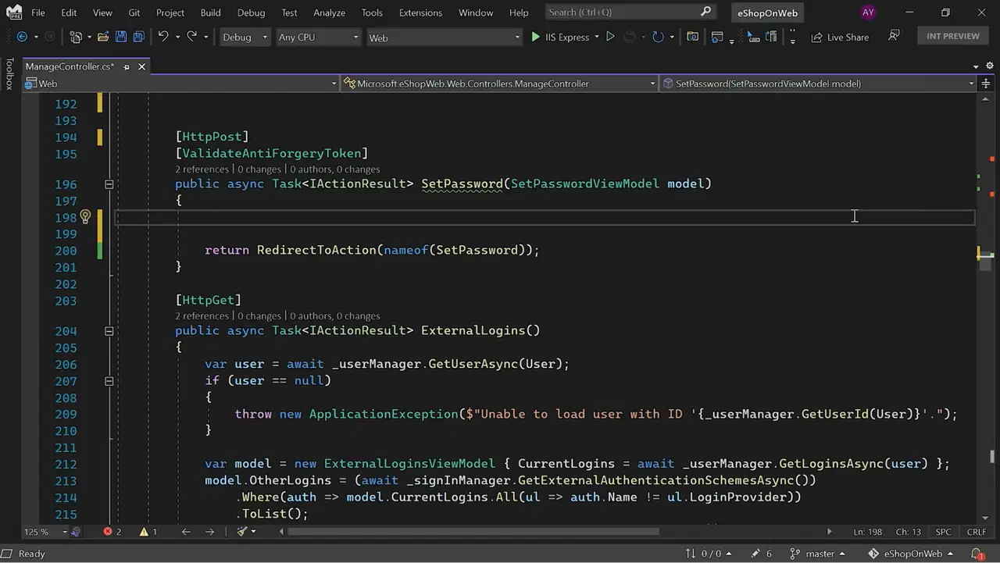

Топ лучших редакторов html-кода
- Notepad++
- Sublime Text
- Visual Studio Code
- Visual Studio
- PyCharm
- Codeanywhere
Эту программу многие используют просто как «умный блокнот», то есть ведут в нём заметки, а не пишут код. Но он полезен и для программистов благодаря подсветке синтаксиса, быстрому поиску функций и навигации по коду. Для Notepad++ существуют десятки плагинов, которые добавляют дополнительные функции: автозаполнение, дебаггинг, автоматическую расстановку закрывающих скобок и кавычек.
Notepad++ поддерживает подсветку синтаксиса большинства популярных языков. Если поддержка не вшита, её можно скачать в виде плагина.
Notepad++ — простой редактор кода, он подойдёт для написания небольших программ или отдельных файлов, но полноценный проект вести в нём будет сложно. С некоторыми языками придётся повозиться, устанавливая отдельно интерпретатор и компилятор.
Этот редактор для работы с кодом похож на Notepad++ простотой, минимумом базовых функций и облегчённым интерфейсом. Функций IDE в нём больше: есть поддержка быстрого переключения между файлами проекта, удобная навигация по коду и интеграция с Git для отслеживания версий программы.
Sublime Text поддерживает плагины, которые добавляют в текстовый редактор автозаполнение, отладку кода и другие функции, полезные для разработчика. Есть деморежим, но потом за использование придётся платить.
Из-за платной лицензии Sublime Text вряд ли стоит использовать начинающим разработчикам. Можно выбрать другие, бесплатные инструменты, а потом перейти на Sublime.
Редактор кода, который практически «дорос» до IDE. В него сразу встроено умное дополнение, контроль версий, инструменты для рефакторинга, то есть упрощения кода, удобная навигация. VS Code поддерживает тысячи плагинов, которые позволяют автоматизировать многие рабочие процессы, например работу с контейнерами, которую применяют при разработке больших современных приложений.
VS Code — один из лучших инструментов для начинающих программистов. Он позволяет писать код и автоматизировать многие рутинные операции, помогает сразу привыкнуть к интерфейсу IDE.
Может не подойти для сложных проектов, в которых важны специфичные для языка инструменты. Интерпретаторы и компиляторы для отдельных языков придётся устанавливать отдельно.
Полноценная IDE, в которую встроен компилятор, продвинутый искусственный интеллект для автозаполнения и другие инструменты для работы над большими сложными проектами. Лучше всего Visual Studio работает с языками С, С++ и С#. Есть и поддержка Python, PHP, JavaScript, HTML, CSS и других языков.
У программы есть бесплатная Community-версия, но её нельзя использовать в коммерческих целях, то есть для работы над проектами, цель которых — извлечение прибыли. Поэтому Visual Studio подходит для личных целей, например выполнения домашних заданий во время обучения.
Visual Studio — хороший инструмент для профессиональных разработчиков на Си-подобных языках, но для остальных слишком тяжеловесный. Новичкам с ним будет трудно, а опытным программистам на других языках лучше выбрать специализированные инструменты.
Эта IDE разработана специально для тех, кто пишет на Python. В PyCharm есть встроенный отладчик и терминал, интерпретатор, интеграция с системами контроля версий и инструментами для аналитики данных и машинного обучения.
У PyCharm есть бесплатная Community-версия, но она не поддерживает инструменты для веб-разработки, интеграцию с базами данных и профилировщик. Опытным разработчикам стоит подумать о платной версии, а начинающим будет достаточно бесплатной.
PyCharm — хорошая IDE для тех, кто пишет на Python. Новичку легко в ней запутаться, а большинство функций использоваться не будет. Поэтому PyCharm лучше выбирать тем, кто профессионально программирует на Python и работает с большими проектами, связанными с анализом данных и машинным обучением.
Этот редактор для написания кода не нужно скачивать на компьютер, и в нём можно работать в браузере с любого устройства. В отличие от других подобных инструментов, Codeanywhere не только позволяет писать код на HTML, CSS и JavaScript, но и поддерживает практически все популярные языки программирования. Файлы проектов можно загружать вручную либо из облачного хранилища.
Codeanywhere — не слишком сложный редактор кода. Подсвечивает синтаксис, поддерживает быстрый поиск и перемещение по файлам проекта, облегчает работу за счёт горячих клавиш и позволяет работать над кодом совместно. Не содержит интерпретаторов и компиляторов, не поддерживает рефакторинг и не дополняет код автоматически, что делает Codeanywhere чуть менее удобным, чем полноценные IDE. Функционал не получится расширить плагинами — доступно только то, что есть в веб-версии.
Codeanywhere — интересный инструмент для совместного редактирования кода и работы с любого устройства. До полноценной IDE не дотягивает, да и как редактор кода уступает VS Code. Вряд ли его можно использовать как основной рабочий инструмент, но как вспомогательный стоит попробовать.